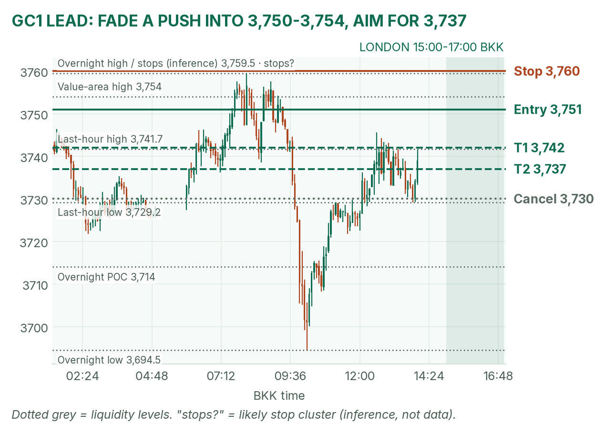
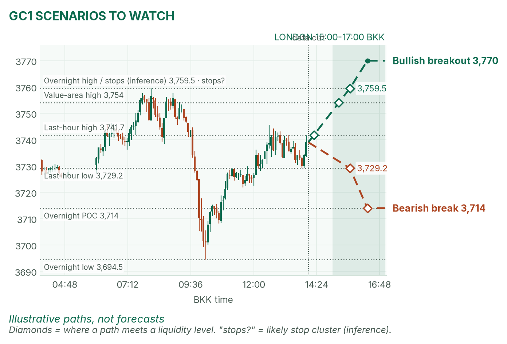
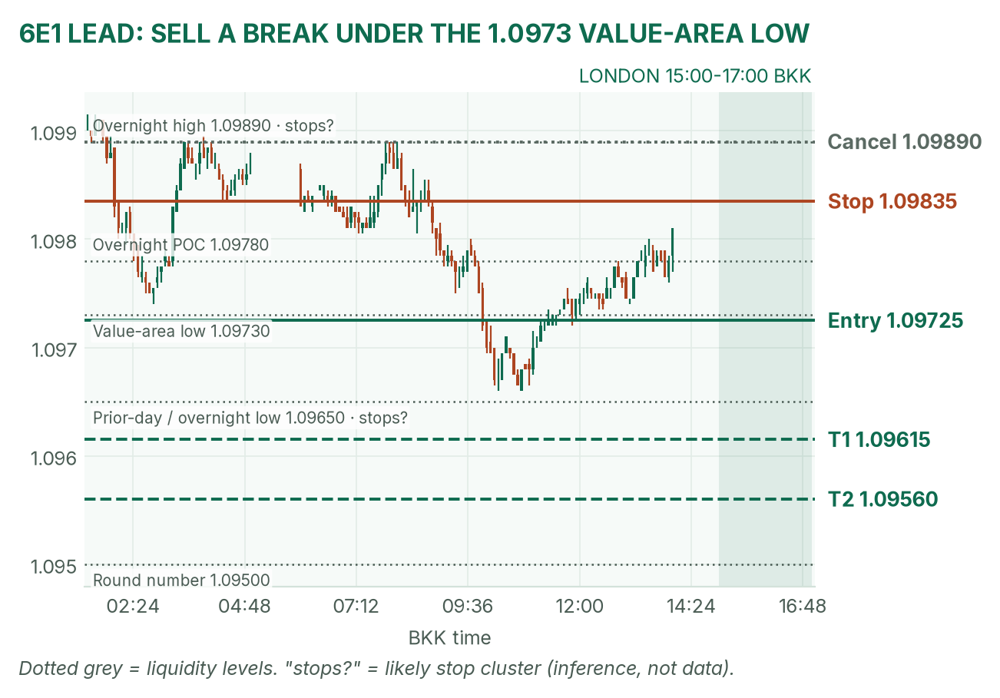
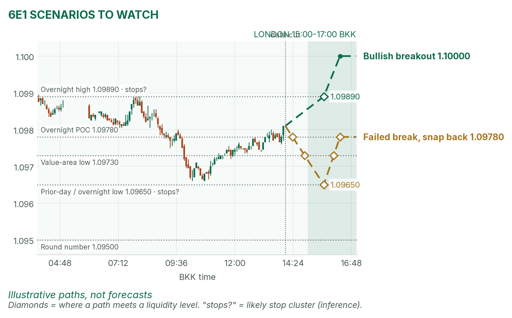

Hawkish Fed minutes knocked gold under 3,700 overnight, then it bounced. London opens mid-range, so I sell strength into resistance.
Window 15:00–17:00 BKK (UK on GMT). Data cut 14:05 BKK: GC 3,739.0, 6E 1.0981 (Dec, TopstepX, last completed 5-minute bar). Levels only, flat by 17:00. Ideas, not advice. April's pre-London brief (~13:00 BKK) was read.
Summary
GC: sell only a stalled push into 3,750–3,754, stop 3,760, targets 3,742 and 3,737. About 33%; it may not fill.
6E: sell a break under the 1.0973 value-area low, stop 1.09835, targets 1.09615 and 1.0956. About 28%: the target is past a normal London range.
No scheduled release inside the window. Headline risk: the Trump–Xi–Putin meeting in Shenzhen (from 13:30).
The market story
The Fed minutes leaned hard toward more hikes. Almost all officials said more increases "would likely be appropriate", and Waller wants a half-point December hike considered (April's brief, via the Fed and CNBC). Higher rates raise gold's opportunity cost, the return you give up by holding a metal that pays nothing. The 10-year yield is 5.052% and the dollar index 103.877 (CNBC via April): both heavy for gold and the euro.
Gold dropped from 3,759.5 (08:05) to 3,694.5 (10:10), then bounced to 3,739.0. The busiest overnight price, the POC, is 3,714. The euro is stuck in a 23-pip box, 1.0966 to 1.0989, sitting on its 1.0978 POC. My read: macro is bearish for both, but price is mid-range, so I wait for resistance or a break.
News (BKK)
Time
Event
Forecast
Prior
Read
13:30
Trump–Xi–Putin, Shenzhen
–
–
Headlines can jolt gold either way.
20:30
US jobless claims
188k
not verified
Low claims = hot = more hike talk, gold and euro lower. After the window.
No-trade zone (5 minutes before to 2 after a release): none falls inside 15:00–17:00. On a big Shenzhen headline, stand aside for 5 minutes. Source: April's calendar (Globe and Mail, White House schedule).
Levels to watch
Level
GC
6E
Wednesday high / low (Wed 06:00–05:00)
3,859.3 / 3,721.8
1.10135 / 1.0965
Overnight high / low (since 06:00)
3,759.5 / 3,694.5
1.0989 / 1.0966
Overnight POC
3,714
1.0978
Overnight value area
3,700–3,754
1.0973–1.0988
Last-hour high / low
3,741.7 / 3,729.2
1.0981 / 1.0974
Typical London range (last 4, median)
about 14.5 points
about 17.5 pips
Gold (GC1)
Bias: down on macro, neutral on the chart after the bounce. The London gold rule is to mark the 15:00–15:30 range and fade its edges back toward the POC. My volatility model expects roughly 3,732 to 3,746 (four sessions, a small sample); the sell zone sits just above that.
The trade: fade a push into the value-area high
Entry
3,750–3,754 (plan 3,751), after 15:30, only if a push into the 3,754 value-area high stalls and a 5-minute bar closes back below 3,750
Stop
3,760, above the 3,759.5 overnight high, where buy stops likely cluster (my inference)
Targets
1R partial 3,742 · full target 3,737 (1.56R)
Cancel
Gold trades 3,730 before the push, a 15-minute close above 3,760, or no fill by 16:30
Probability
~33% for the full target, an estimate. Basis: GC London range fades did best in our 42-session study (not significant); 14 points is about one median London range.
Why: sellers defended the value-area top before the drop, and the Fed backs them. No stall at 3,754, no trade. April agrees: she calls gold mid-range with rate fears in charge.

GC 5-minute bars to the 14:05 cut. The sell waits at the value-area high, under the overnight high.

Illustrative paths, not forecasts.
Scenarios to watch
Bearish break: a 15-minute close below the 3,729.2 last-hour low. Aims for the 3,714 POC.
Bullish breakout: a 15-minute close above 3,759.5 that holds. Aims for 3,770.
Euro (6E1)
Bias: down, with a firm dollar. The 6E London rule is to trade breakouts of the 15:00–15:30 range. A pip is 0.0001. The box is tight; sell stops likely sit under 1.0965–1.0966, Wednesday's and today's lows (my inference).
The trade: bearish breakdown
Entry
Sell stop 1.09725 after 15:30, one tick under the value-area low; skip if the 30-minute range low is already below 1.0970
Stop
1.09835, above the 1.0978 POC
Targets
1R partial 1.09615 · full target 1.0956 (1.5R), through the 1.0965 stop cluster
Cancel
A trade above 1.0989 before the fill, or no break by 16:30
Probability
~28%, an estimate. Basis: 6E London range breakouts averaged +0.31R over 26 sessions (not significant), cut because the full target needs 25 pips from the cut, above the 21-pip 80th-percentile range.
Why: a tight box under a firm dollar tends to break with the trend; stops under 1.0965 add fuel. April partly agrees: her hawkish case watches 1.0966 for a break, but her base case is that ranges hold.

6E 5-minute bars to the 14:05 cut. The entry sits one tick under the value-area low.

Illustrative paths, not forecasts.
Scenarios to watch
Bullish breakout: a 5-minute close above 1.0989. Aims for 1.1000.
Failed break, snap back: a dip under 1.0965 that closes back above it. Aims for the 1.0978 POC.
NQ (not traded): 27,731.25 at the cut, at its 27,742 overnight high, above Wednesday's 27,609.75 high.
Before you click
ORB bases. GC London: 15:00–15:30 range, fade to POC. GC NY: 20:20 COMEX open until a 2-minute candle's volume drops below half the first two's average, fade to POC. 6E London: 15:00–15:30 range, trade breakouts. NQ NY: 21:30–21:35 range, trade breakouts.
Checklist. Room to max loss? Daily rules OK? No release within 30 minutes? With the bias? At a marked level? Setup tagged? Entry, stop, 1R partial, target set? Calm, not chasing?
Reset (60 seconds). Hands off the mouse. Breathe in 4, hold 4, out 6, five times. Name the feeling in one word. Say the plan aloud. "Eager" or "frustrated"? Wait 5 minutes.